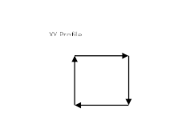
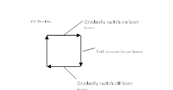

Axis Command
PWM_CONTROL(value)
The PWM control requires special hardware in the FPGA of the Motion Coordinator. Check that this function is supported before using it. The PWM output of any axis can be linked to the speed of moves running on other axes. For example: Axis 4’s PWM output can be linked to the velocity profile of interpolated moves running on axes 0, 1 and 2.
- The PWM output mark/space can be written to via application software program in a simple way.
- The PWM mark size can be automatically set via an interpolated path speed.
- The PWM mark size can be automatically set via an interpolated path speed AND a defined profile along an XY path.
- Some implementations also feature a hardware gating function.
A 20 MHz clock is used as the base clock for the PWM generation.
|
Value |
Description |
|
0: |
The PWM output is switched OFF |
|
1: |
PWM output is switched on. The PWM_MARK value comes from the PWM_MARK axis parameter. |
|
2: |
PWM_CONTROL(2, multiplier, offset, limit value, link axis)
PWM output is calculated via VP_SPEED (path velocity)
of an axis and multiplier. It is adjusted on each servo cycle.
|
|
3: |
PWM_CONTROL(3, GT/LT, ON/OFF, table start, table end)
This axis function loads a sequence of positions into
the gating FIFO. The GT/LT value should be set to 1 for a GT comparison, 0
for a LT comparison.
|
|
4: |
Empty the FIFO buffer. |
|
5: |
Turn on PWM gating function if the hardware allows it. |
|
6: |
Clear the PWM_ENCODER register to zero. |
|
7: |
Reserved. |
|
8: |
PWM_CONTROL(8, multiplier, offset, limit_value, velocity_link_axis, amplitude_link_axis) PWM output is calculated via VP_SPEED (path velocity) of an axis and multiplier and will be adjusted on each servo cycle. The value loaded into the PWM_MARK is given by: VP_SPEED velocity_link_axis * DPOS amplitude_link_axis * multiplier + offset. If this calculated value exceeds the limit_value, the limit_value is applied. The VP_SPEED value is the velocity profile speed for the velocity link axis. The DPOS of the amplitude_link_axis can be set using a CAMBOX profile so that the amplitude varies. This is achieved using 3 stages: 1. The CONNPATH(base XY) move type can be used to “connect” a virtual axis to an XY path. 2. A CAMBOX profile is then linked to the virtual axis. 3. The PWM_CONTROL(8, …) function then links to the CAMBOX profile |
|
9: |
PWM_CONTROL(9, multiplier, duty_cycle, link_axis) The frequency of the PWM output is calculated via VP_SPEED (path velocity of an axis) of the link axis and multiplier and will be adjusted on each servo cycle. The value loaded into the PWM_CYCLE is given by 20000000 / (VP_SPEED * multiplier). The VP_SPEED value is the velocity profile speed for the link axis in user units. The value loaded into the PWM_MARK is the percentage of the PWM_CYCLE specified in duty_cycle. |
NOTE that the WDOG must be ON for PWM generation.
The PWM_CONTROL function is an axis function and can be directed to an axis using the AXIS modifier or the BASE function.
Using the PWM_CONTROL(2, …) automatic link to velocity mode:

BASE(0, 1)
SPEED = 5000
ACC(50000)
MERGE = ON
MOVE(10000, 0)
MOVE(0, -10000)
MOVE(-10000, 0)
MOVE(0, 10000)
'This program sets the PWM output to a minimum of 50 and maximum of 500. At a speed of 2000 the PWM output will be 250:
BASE(4)
WDOG = OFF
WA(10)
ATYPE = 35
WDOG = ON
PWM_CYCLE = 1000 'Sets 20khz PWM
Link = 0 'Link to axes 0 and 1
Mult = 0.1 'If speed = 2000: pwm = 2000 * 0.1 = 200
PWM_CONTROL(2, mult, 50, 500, link)
Note that above speed = 4500 the PWM will be limited to 500, by the limit setting
Using the PWM_CONTROL(8, …) automatic link to velocity mode with profile:

Suppose we want to control the laser power during the movement cycle:
Such a profile could be entered as a CAM profile using:
start = 1000
TABLE(start, 0, 0, 0, 0, 1000, 1000, 1000, 0, 0)
Note that the cam profile can be any complex shape and have any number of points.
'Stage 1: Link a virtual axis to the XY path:
CONNPATH(0) AXIS(8)
BASE(4)
WDOG = OFF
WA(10)
ATYPE = 35
WDOG = ON
PWM_CYCLE = 1000 'Sets 20khz PWM
Link = 0 'Link to axes 0 and 1
Mult = 1 / 10000 'If speed = 5000: pwm = 5000 * (1 / 10000) * DPOS = 500
PWM_CONTROL(8, mult, 50, 500, link, 9)
'Note how the CAMBOX links to a length of the box outline path of 40000:
TABLE(1000, 0, 0, 0, 0, 1000, 1000, 1000, 0, 0)
BASE(0, 1)
SPEED = 10000
ACC(50000)
MERGE = ON
WHILE TRUE
CAMBOX(1000, 1008, 1, 40000, 8) AXIS(9)
MOVE(10000, 0)
MOVE(0, -10000)
MOVE(-10000, 0)
MOVE(0, 10000)
WAIT IDLE
WA(10)
DEFPOS(0) AXIS(8)
WEND